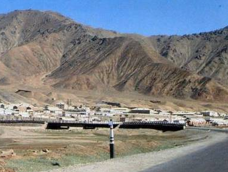
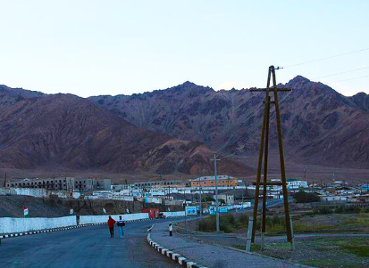
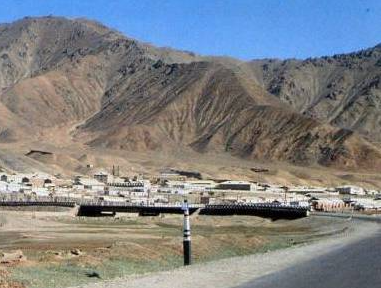
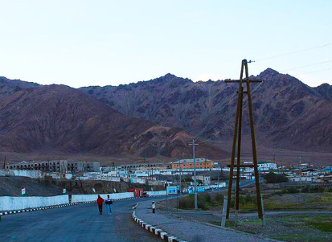

- Мургаб

- Мургаб

- Мургаб

Мургаб – высокогорный поселок в восточной части Таджикистана, расположенный на высоте 3600 метров над уровнем моря. На такой высоте практически нет растительности, а за деревьями ухаживают как за маленькими детьми. Также, гости Мургаба могут чувствовать признаки горной болезни, из-за нехватки кислорода. Климат здесь так же суров: очень сухой воздух, сильные холодные ветра, повышенный ультрафиолет и порой летом +40° тепла, а зимой -40° мороза считается нормой. Никто, наверное, и не подумал бы строить поселение в таких суровых условиях, но в ходе «Большой игры», борьбы между Россиийской и Британской империями за влияние в Центральной Азии, до этих мест добрался отряд русских войск, который организовал здесь погранзаставу в 1892 году. Она получила название Шаджанский пост. Сначала были построены небольшие, но утепленные домики, чтобы пережить суровую зиму на Памире, а позже появились и другие постройки, и так начиналась история Мургаба. Спустя несколько лет, русские основали погранзаставу в Хороге, и значение Шаджанского поста снизилось. Позднее, уже под названием Мургаб, этот поселок стал одним из пунктов на Памирском тракте, а также служил центром геологоразведки в восточном Таджикистане. Сегодня Мургаб – это обязательное место остановки для путешественников, так как на сотню километров нет другого населенного пункта, где можно было бы переночевать в относительно комфортных условиях.
 |
 |
|
Сегодня, как и в прошлом, Мургаб выглядит очень суровым местом, некоторые даже называют его постапокалиптичным: множество глиняных домов, на фоне каменного плоскогорья, высочайших гор вдали. Здесь не хватает воды и электричества, которые в целях экономии включают лишь в определенные часы. Среди инфраструктуры есть лишь небольшая больница, базар, гостиница и несколько гостевых домов. Население Мургаба составляет около 6300 человек, которые поровну представлены памирцами и киргизами. А также, во время туристического сезона здесь постоянно можно увидеть около 50-100 туристов со всего мира, путешествующих по Памирскому тракту. Среди местных достопримечательностей можно выделить лишь памятник Ленину, оставшийся с советских времен, местный базар из контейнеров, где можно купить продукты и дорогие фрукты, а также футбольное поле, где порой играет местная ребятня, а на матч приходят местные жители. Всё это придает особый колорит суровому образу Мургаба, и без этого поселка общая картина Памирского тракта была бы неполной.
(Видео про посёлок Мургаб, пройдите по ссылке в низу)
YouTube| Население | Площадь(km2) | Высота (метр) (от уровня море) |
|---|---|---|
| 9 468 | 38 442 | 3 612 |
S_ONE - Сын Мургаба
#Плавание #Лето#Мургаб